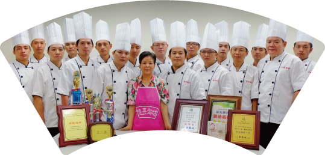

如同媽媽對自己家人的那份愛心，
將最好的呈獻給您
將最好的呈獻給您

創先市場選用非基因改造的豆干製品，豬肉嚴選有CAS標張的，從分割乃至製作絞肉，都是專人分工負責，絕對不假手外面的廠商。
蝦子每天由阿姨一尾一尾仔細挑除沙筋，不好處理的雪菜也一定要用大量清水反覆清洗，不能有一顆沙粒殘留。粽子的粽葉也是一片片地兩面清洗。
心太軟的紅棗堅持買整顆的紅棗自行一顆顆手工去籽，連送貨的廠商都直說，明明市面多的是去籽好的紅棗，沒見過願意這麼費工處理的老闆！
原料嚴選
新鮮的食材，是美味的首要條件。億長御坊所有的生鮮食材，都是每天凌晨四點前，大師傅親自到市場嚴選最新鮮之上等食材，選好後即刻送回廚房，動用數十位員工從挑菜、洗菜，過程都有最嚴格的標準把關，每個環節都馬虎不得。創先市場選用非基因改造的豆干製品，豬肉嚴選有CAS標張的，從分割乃至製作絞肉，都是專人分工負責，絕對不假手外面的廠商。
蝦子每天由阿姨一尾一尾仔細挑除沙筋，不好處理的雪菜也一定要用大量清水反覆清洗，不能有一顆沙粒殘留。粽子的粽葉也是一片片地兩面清洗。
心太軟的紅棗堅持買整顆的紅棗自行一顆顆手工去籽，連送貨的廠商都直說，明明市面多的是去籽好的紅棗，沒見過願意這麼費工處理的老闆！
調味料也馬虎不得
堅持選用100%純釀造醬油、100%糯米釀造醋、100%黃豆沙拉油傳統市場人情味服務
不只保持傳統市場的人情味，發自內心真誠地對待每一位顧客，更讓「人情味」的優良理念在億長御坊中發揚，用心了解顧客需求，不斷精進改善。億長御坊用心，讓您安心
億長御坊三大堅持：「堅持手工現做、堅持不添加任何防腐劑、堅持用最上等的食材原物料」。在衛生方面更是精益求精，領先同業成立具有「HACCP認證」中央廚房，為傳統市場商家第一家。再次印證朱姐不計成本的用心，如同每位媽媽想呈獻給家人的那份細膩情感。
回最上